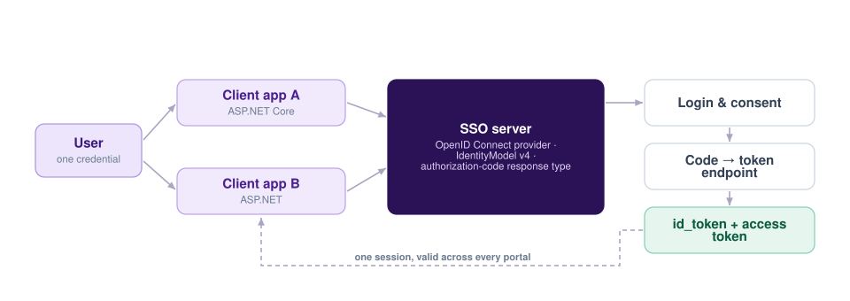

One Credential Across Every University Portal
A university does not run one application, it runs many — and asking students and faculty to keep a separate username and password for each of them is a support burden and a security problem at the same time. This single sign-on gateway gives them one login for all of it.

The problem worth solving
In daily life we come across a great many applications, and juggling different usernames and passwords for each is genuinely difficult. Within a single organisation it is worse, because the applications belong to the same institution and users reasonably expect them to know who they are. A university is the clearest case of this, and it is the case this project was built for.
How it is put together
- SSO server — built with ASP.NET Core, acting as the OpenID Connect identity provider, using IdentityModel version 4.
- Two client applications — one on ASP.NET Core and one on classic ASP.NET, deliberately different so the integration could not quietly depend on a single framework's conveniences.
- Authorization-code response type — the code is exchanged server-side for tokens, so tokens never travel through the browser's address bar.
Why the code flow
Choosing the authorization-code response type over an implicit flow keeps the access token off the front channel entirely. It is one extra round trip and a meaningfully smaller attack surface.
What it changes for users
A student logs in once and moves between the academic portals without being asked again. For the institution, credential management, password resets and access revocation all collapse to a single place instead of being duplicated per application.